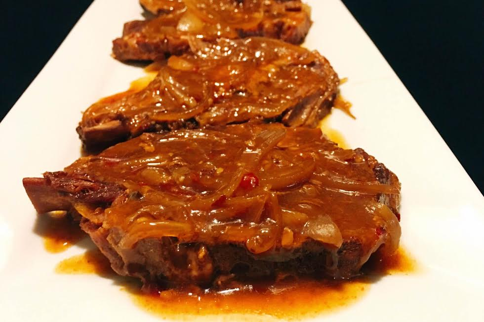

Description
Chilli pork is a simple enough recipe just requiring more often than not 2
ingredients but it's delicious but reliable option for tea when you don't know what
else to cook.
Ingredients
- 6 pork chops
- 1/2 cup sweet chilli sauce
- 1/4 cip hoisin sauce
- 1 teaspoon sesame oil
- 1 large onion, cut in thin strips
- 1 tablespoon minced garlic
Instructions
- Place pork chops on base of slow cooker
- Scatter onion strips on top
- Combine all other ingredients and pour over
- Replace lid and cook on low for approx 6 hours
- If your sauce is runny at the end of cooking time, remove pork chops to serving plates, add cornflour slurry and increase heat to high, stirring for approx 5mins to form a thicker glossy sauce to pour over your chops.